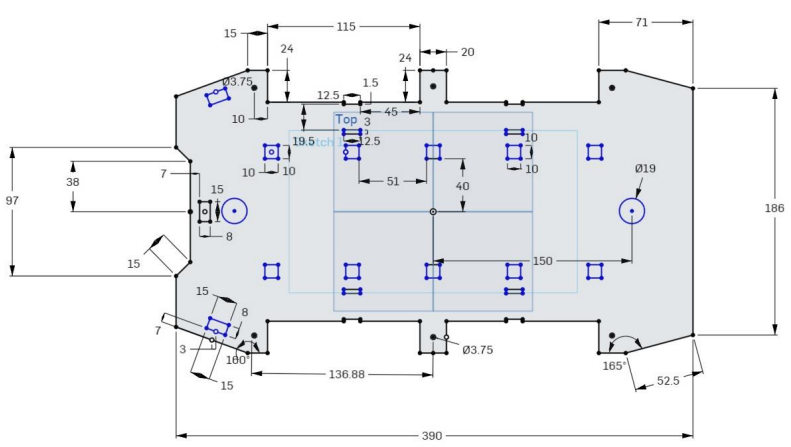
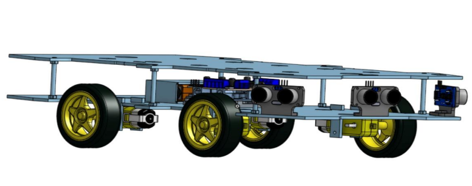
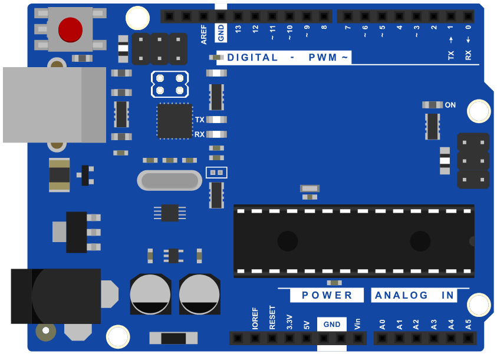
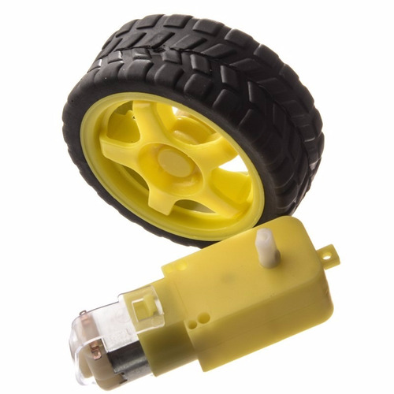
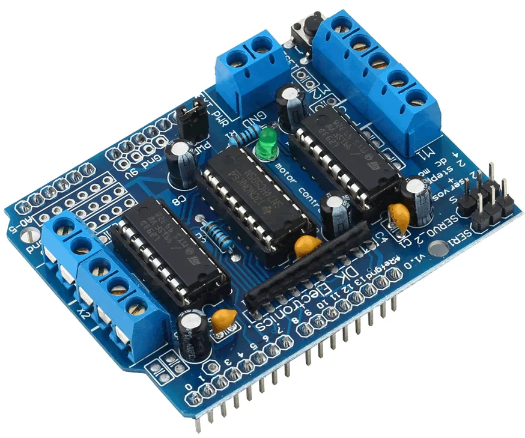
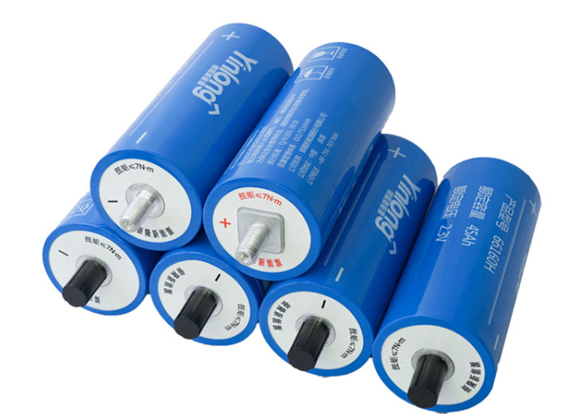
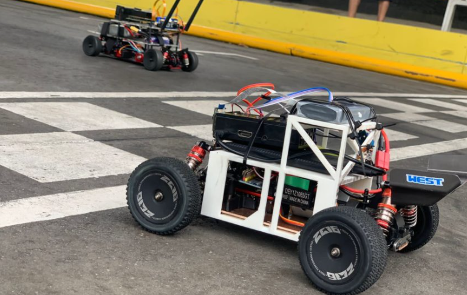

Um veículo autônomo em escala representa um grande avanço tecnológico
da área automotiva. É um robô que, por meio de uma combinação de
sensores, programas e sistemas de comunicação, são capazes de analisar
o ambiente ao seu redor, seguir um trajeto e desviar de obstáculos de
maneira independente.
Temática
O nosso projeto foi inserido no conceito de Cyberpunk. Desta forma,
buscando oferecer uma visão tecnológica que refletisse a
complexidade dos ambientes urbanos.
Considerando que o carrinho foi projetado para participar de uma
competição de carros autônomos, realizada ao ar livre na AARC do
ABC, diversos fatores que simulam um ambiente urbano precisaram ser
levados em consideração, tais como o relevo do terreno, as condições
climáticas e a limitação de espaço a fim de se obter sucesso na
prova.
Design da bolha
Inspirada no modelo de carro Mizutani Shion, um cupê esportivo,
nossa bolha adota a estética de um dos carros do jogo Cyberpunk
2077, um jogo de ação e RPG ambientado numa metrópole distópica,
aproveitando o gancho de nossa temática. O desenho foi projetado no
software de modelagem 3D Onshape, e impresso em impressora 3D.
Design do chassi
Nosso chassi foi projetado no software de modelagem 3D Onshape, e
impresso na impressora de corte à laser, em MDF, que oferece a
combinação ideal entre leveza e resistência estrutural. Ele permitiu
que o chassi suportasse os componentes eletrônicos com estabilidade,
além de permanecer resistente durante testes e experimentações.
Imagens do projeto

Chassi Projetado
Vista Superior Chassi

Chassi 3D
Funcionamento geral
Ao ligar a chave, a bateria alimenta a placa Arduíno e os motores, e o
carrinho entra em movimento. Em seguida, os sensores ultrassônicos
realizam o monitoramento do ambiente em busca de obstáculos. Caso algo
seja detectado ha uma distancia de ate 50 cm, o sistema ajusta o
movimento do carrinho:
Quando há um obstáculo detectado ao lado direito, os motores do lado
direito avançam enquanto os do lado esquerdo recuam, de maneira a
permitir que o carrinho desvie para a esquerda. O mesmo acontece quando
algo é detectado no lado esquerdo, invertendo-se o movimento dos motores
para que os motores do lado esquerdo avancem e do lado direito recuem e
o carrinho vire para a direita. Já o sensor frontal, ao detectar um
obstáculo próximo, ativa a função ré, fazendo com que todos os motores
recuem para trás para evitar colisões. Esse ciclo se repete
continuamente, permitindo que o robô navegue de maneira autônoma pelo
ambiente.
Principais componentes

Arduino

Motores

Ponte H Shield
Sensor de Distância Ultrassônico HC-SR04
Chaves

Células

Regulador de Tensão
×
Arduino: programado para controlar as ações do robô com base nos sinais
recebidos dos três sensores ultrassônicos.
Motores: foram utilizados quatro conjuntos de rodas com motores de
corrente contínua (DC) que possibilitaram a tração e movimentação do
robô.
Ponte H Shield: utilizadas 2 pontes H para controlar o sentido (horário
e anti-horário), direção (ré e frente), bem como a velocidade dos
motores, direcionando-os para o movimento desejado.
Sensor de Distância Ultrassônico HC-SR04: Detecta os obstáculos na
frente do robô. Ele emite ondas ultrassônicas de 40 kHz que ao
refletirem em objetos próximos permitem calcular a distância até os
obstáculos e desviar deles.
Chaves: Usadas como interruptores para ligar ou desligar o robô.
Células: Foram utilizadas oito células de 4V, organizadas em dois
suportes individuais com 4 células ligadas em paralelo cada. Os dois
suportes são conectados em série. Com isso, o sistema gera uma tensão
total de 8V, que será regulada por um circuito controlador de tensão na
placa para alimentar o carrinho.
Regulador de Tensão: O regulador de tensão mantém a voltagem estável
dentro do robô, garantindo que todos os componentes recebam a quantidade
correta de energia sem sobrecarregar ou sub-alimentar nenhum deles.
Projeto final
Realizamos o desenvolvimento de um carro autônomo em escala, baseado
na interação entre a placa Arduíno com os componentes eletrônicos que
garantiram a mobilidade e eficiência na detecção de obstáculos. O
carrinho produzido foi utilizado para participação na competição
Robocar Race 2024, promovida pela FATEC Santo André e a UFABC.